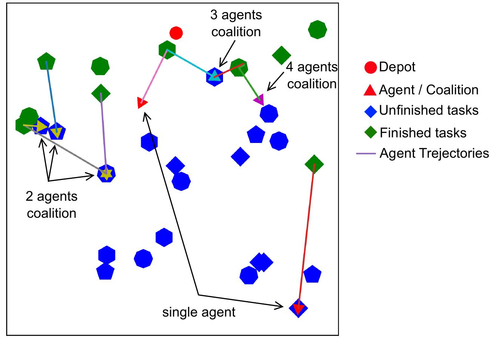
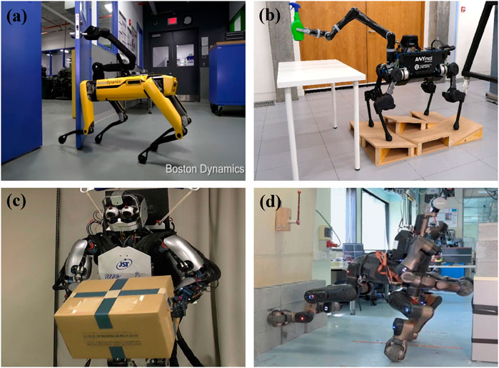
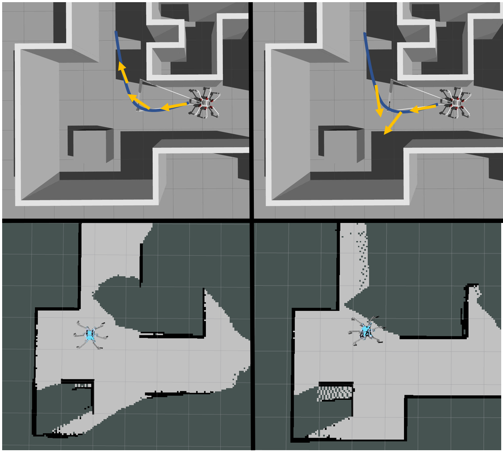

Weiheng Dai, Aditya Bidwai, Guillaume Sartoretti,
2024 IEEE International Conference on Robotics and Automation (ICRA), 16567-16573, 2024
IEEE Xplore
This study explores how multiple robots can effectively coordinate to complete spatially distributed tasks, such as in construction, where the size of required teams varies. The challenge is to balance travel and waiting times while allowing robots to dynamically form and disband teams. We propose a novel reinforcement learning approach that empowers robots to create efficient schedules for task execution. Using an attention-based neural network, the robots can make informed decisions about their movements and collaborations. Additionally, we introduce a leader-follower strategy to enhance teamwork. Our findings demonstrate that this method not only matches or exceeds traditional approaches but also operates at least 100 times faster in scenarios with frequent team changes.

Yifeng Gong*, Ge Sun*, Aditya Nair, Aditya Bidwai, Raghuram CS, Guillaume Sartoretti, Kathryn A Daltorio
Frontiers in Mechanical Engineering 9, 1142421, 2023
arXiv
This review explores the diverse applications of legged robots in manipulating objects, categorizing existing works into four methods: object interactions without grasping, manipulation with walking legs, dedicated non-locomotive arms, and legged teams. The examples provided underscore the need for future research directions in legged robot manipulation, including multifunctional limbs, terrain modeling, and learning-based control, to enhance deployment capabilities in challenging environments such as warehouses, construction sites, natural areas, and home robotics.

Sarang C Dhongdi, Mohit P Tahiliani, Ojit Mehta, Mihir Dharmadhikari, Vaibhav Agrawal, Aditya Bidwai,
Proceedings of the 2022 Latin America Networking Conference, 34-41, 2022
ACM Digital Library
This paper introduces a Flying Ad-hoc Network Simulator (FANS) platform that connects Network Simulator (ns-3) and robot simulator (Gazebo) through the Robot Operating System (ROS). The platform is demonstrated through an implementation of a land-area survey application for a Flying Ad-hoc Network (FANET), showcasing analyses of network parameters like Packet Delivery Ratio (PDR), hop-by-hop delay, and end-to-end delay for effective real-time testing.

Aditya Bidwai, Ge Sun, Peizhuo Li, Mukund Bala, Elango Praveen, Guillaume Sartoretti,
This work focuses on optimizing the autonomous exploration of a legged robot by enhancing its heading to maximize information acquisition from an onboard limited field-of-view sensor. The method, demonstrated in three simulated environments, leverages the robot's partial map and motion constraints to dynamically plan optimized gaze sequences, allowing the robot to efficiently cover unknown areas and achieve significantly more complete final maps compared to baseline controllers.